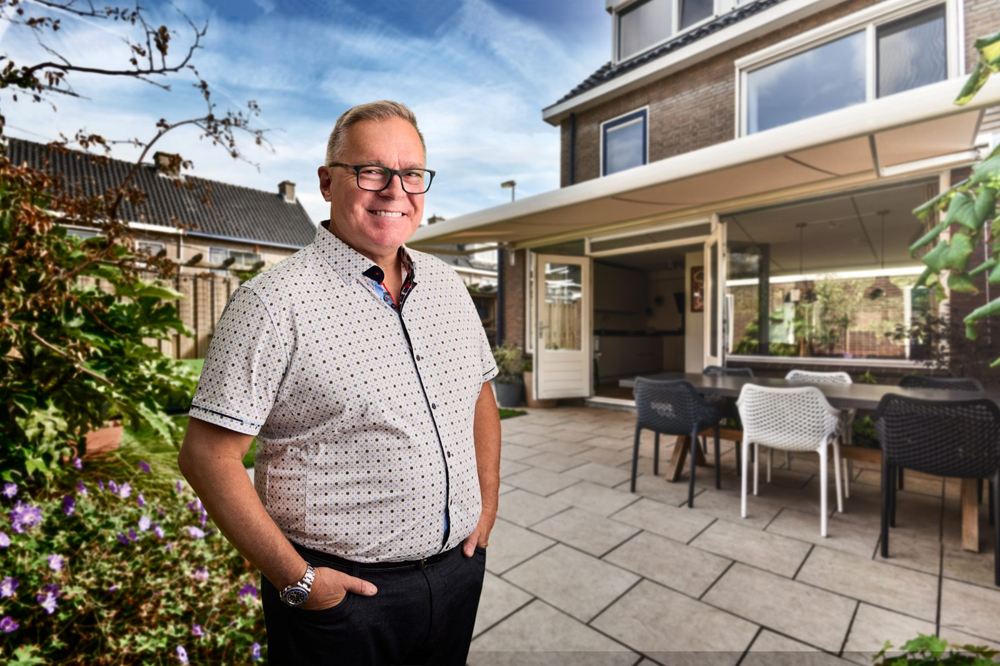

We work alongside Canadian veterans throughout the VAC benefits process, helping them access the benefits, services, and support they’ve earned through their service.
Are you considering a first claim, looking again at a decision or dealing with a condition that has changed?
You may be starting an application, reviewing a decision, or dealing with a condition that has changed. We work with you on the next steps for your situation.
We help prepare your disability benefits application, coordinate medical questionnaires with a health-care provider, and keep track of what needs to be submitted.
We help you make sense of a VAC decision and prepare for a departmental review or Veterans Review and Appeal Board (VRAB) hearing, when appropriate.
If a condition VAC has already recognized has worsened, we help you request a reassessment and prepare updated medical information.
We help you make sense of VAC letters and next steps, and include family or caregivers when you want them involved.
From your first conversation through your application and decision, we provide practical help and keep you informed about what comes next.
Read how veterans describe their experience working with us.

She cares about me as a person. She doesn’t care about me as a file.

She was willing to go the extra mile to find out the information I needed to find out.

Nothing happens without paperwork in the military. I could see that in the work 270 did. Someone’s doing good work there.
Answer five questions about your service and experience to help us understand your situation.
Tell us where you are in the process. We’ll listen, answer your questions, and explain how we can help.